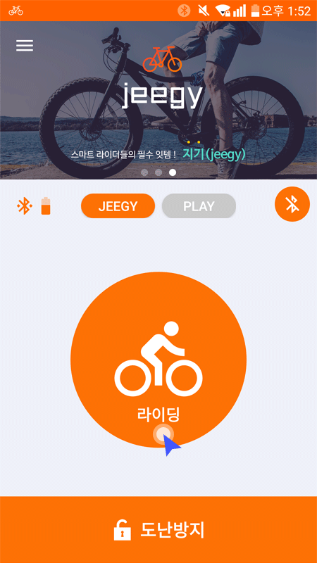
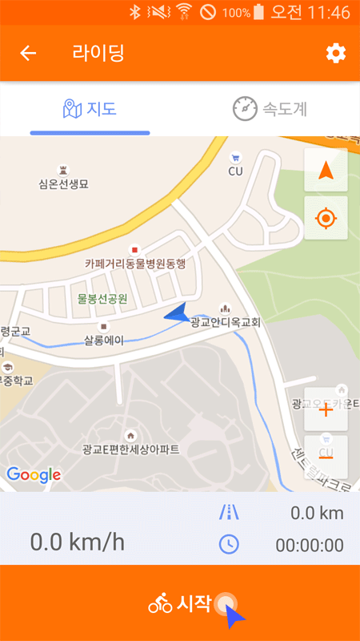
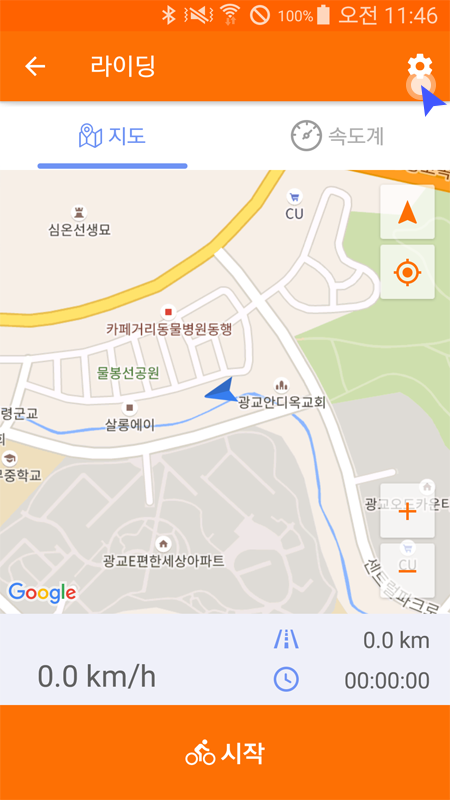
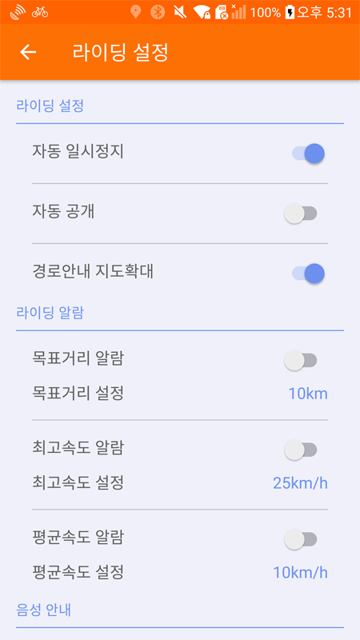
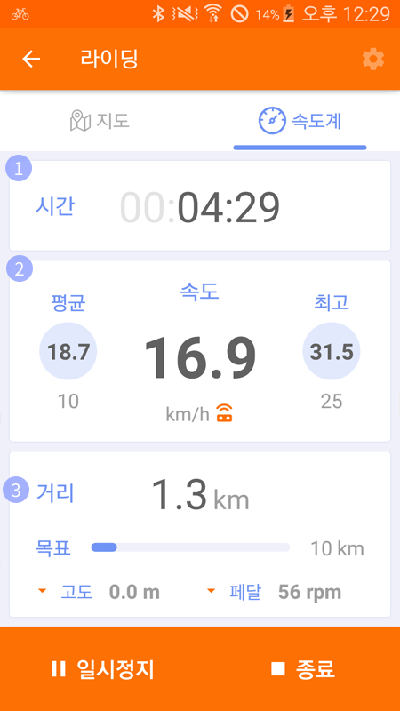
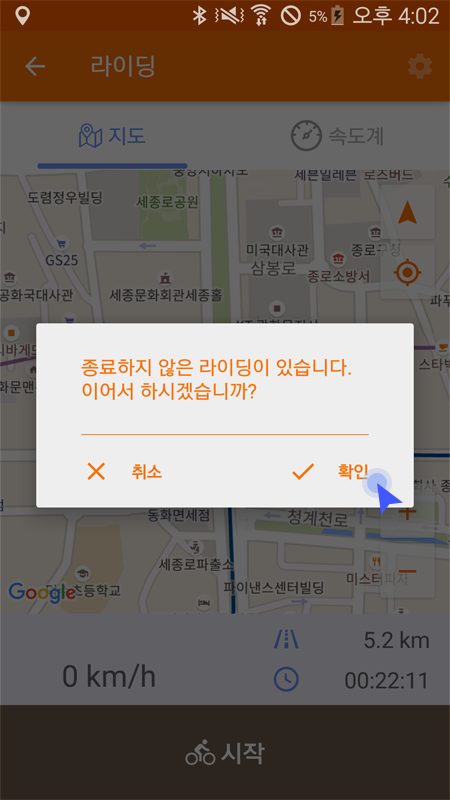
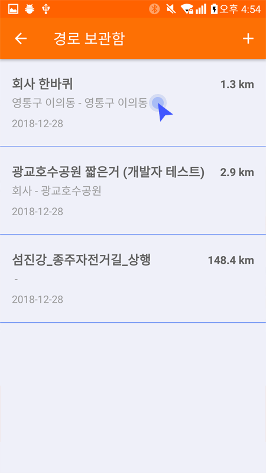
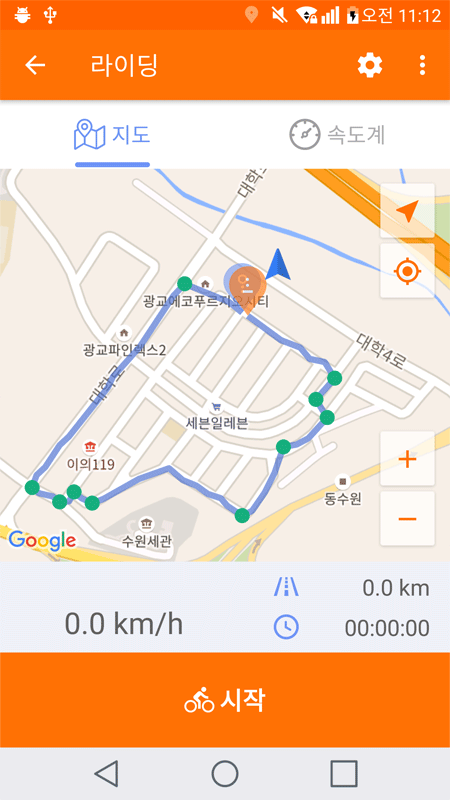
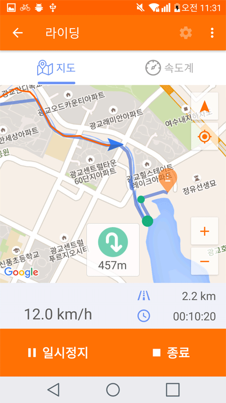

* 자전거 라이딩 중에 화면을 보게 되면 사고 위험이 있습니다. 필히 정지 후 화면을 확인하시기 바랍니다.
‘라이딩 버튼’을 클릭하여 라이딩 화면으로 이동합니다.
* 도난방지 모드일 때는 라이딩 화면으로 이동할 수 없습니다.
‘시작' 버튼을 클릭하면 라이딩이 시작되고 트래킹을 시작합니다.
우측 상단의 설정버튼을 클릭하면 라이딩 옵션을 설정할수 있습니다.

1. 라이딩 설정
① 자동일시정지 : 자전거가 멈추었을때 앱상의 자동일시정지 기능의 사용여부를 설정합니다.
② 자동공개 : 내 라이딩 기록을 자동으로 공개 여부를 설정합니다.
③ 경로안내지도확대 : 경로 따라가기 기능을 사용중에 방향포인트 근접시 지도가 포인트 중심을 확대되는 기능의 사용여부를 설정합니다.
2. 라이딩 알람
① 목표거리알람 : 설정한 목표거리에 도달하면 알람이 울리도록 합니다.
② 목표거리설정 : 원하는 목표거리을 설정합니다.
③ 최고속도알람 : 설정한 최고속도치에 도달하면 알람이 울리도록 합니다.
④ 최고속도알람 : 원하는 최고속도값을 설정합니다.
⑤ 평균속도알람 : 설정한 최저속도치까지 내려하면 알람이 울리도록 합니다.
⑥ 평균속도알람 : 원하는 최저속도값을 설정합니다.
3. 음성안내
① 음성안내 : 경로따라가기 기능시 방향 포인트를 음성으로 안내해주는 기능
② 거리안내 : 설정된 거리수치를 간격으로 안내합니다.
③ 거리설정 : 거리안내 간격 수치를 입력합니다. ex) “5km 라이딩 하였습니다.”
④ 라이딩시간안내 : 설정된 시간마다 음성안내 ex) “유효 라이딩 시간이 30분 경과되었습니다.”
⑤ 시간 주기 설정: ‘라이딩 시간 안내’ 시간 설정 10분, 30분, 1시간 선택
⑥ 경로안내: 따라가기 음성안내 ex) “약 300미터 후 한시 방향 입니다.” , “잠시 후 좌회전 입니다.”, “경로를 이탈하였습니다.”
⑦ 목표 거리 안내: 목표 거리가 설정되어 있을때 목표거리에 도달하면 안내 ex) “목표거리에 도달하였습니다”
⑧ 목표 최고속도 안내: 목표 최고속도가 설정되어 있을때 최고속도에 도달하면 안내 ex) “목표 최고속도에 도달하였습니다.”
⑨ 목표 평균속도 안내: 목표 평균속도가 설정되어 있을때 평균속도보다 높아지거나 낮아지면 안내 ex) “설정된 평균속도보다 낮아졌습니다”, “설정된 평균속도에 도달하였습니다.”
라이딩이 시작되면 위와 같이 화면이 변경되고 ‘종료'버튼을 클릭하면 라이딩이 종료되며 트래킹 정보는 서버에 저장됩니다.
① 현재위치 : 자신의 현재 위치와 방위를 표시합니다. ② 트래킹 경로 : 자신이 지나온 경로를 표시합니다. ③ 방위 변경 : 일 때는 자신이 바라보는 방향으로 지도가 변경되고 일 때는 지도가 항상 북쪽을 향합니다. ④ 나의 위치: 현재위치를 지도 중앙에 계속 표시하려면 ‘나의 위치' 버튼을 클릭하면 됩니다. ⑤ 확대/축소: 지도를 확대하거나 축소할 수 있습니다. ⑥ 알림아이콘 : 설정값에 도달하면 알림이 뜹니다. 목표거리/평균속도/최고속도 순 ⑦ 속도: 현재 속도를 표시합니다. 지기 스피드센서가 연결되어 있을때에는 우측에 센서 아이콘이 보입니다. ⑧ 거리: 라이딩 한 거리를 표시합니다. ⑨ 시간: 라이딩 한 시간을 표시합니다.
① 현재 라이딩 한 시간을 나타냅니다 ② 현재 속도를 나타내는 부분이며 평균속도와 최고속도를 같이 보여줍니다. 스피드 센서가 연결되어 있을 경우에 단위 옆에 아이콘이 나타납니다. 최고속도와 평균속도 수치는 하단에 설정된 목표값에 도달할수록 원이 채워집니다. ③ 거리관련된 수치를 보여주는 부분이며 현재거리, 설정목표거리, 고도, 경사도순입니다. 항목을 한번씩 누를때마다 다른 항목으로 변경이 가능합니다.
라이딩중 앱이 종료되어 라이딩이 의도하지 않게 정지되었을 경우 앱을 다시 실행하여 라이딩 화면으로 전환하면 라이딩을 이어서 하거나 종료할 수 있습니다.
라이딩 종료 중 스마트폰의 통신상태가 불안정하여 트래킹정보가 업로드에 실패하였어도 통신상태가 양호할 때 라이딩화면으로 진입하면 업로드를 재개할 수 있습니다.
라이딩을 시작하면 스마트폰의 상태바에 표시되고 앱을 실행시키지 않아도 라이딩 상태를 변경할 수 있습니다.
- 일시정지 : 트래킹을 잠시 멈춤니다.
- 다시시작 : 일시정지된 트래킹을 재개합니다.
- 종료 : 라이딩을 종료하고 트래킹 정보를 업로드합니다.
라이딩화면의 ‘경로 가져오기'를 통해서 경로보관함의 목록을 볼 수 있습니다.
* 그룹라이딩에서는 해당 메뉴를 사용 할 수 없습니다.
목록에서 경로를 선택합니다.
경로가 선택되면 지도에 따라갈 수 있는 경로와 출발지 및 목적지가 표시됩니다.
경로에서 녹색점은 알람이 표시되는 곳이며 알람지점 근처에 도달했을때 팝업 메시지로 표시됩니다.